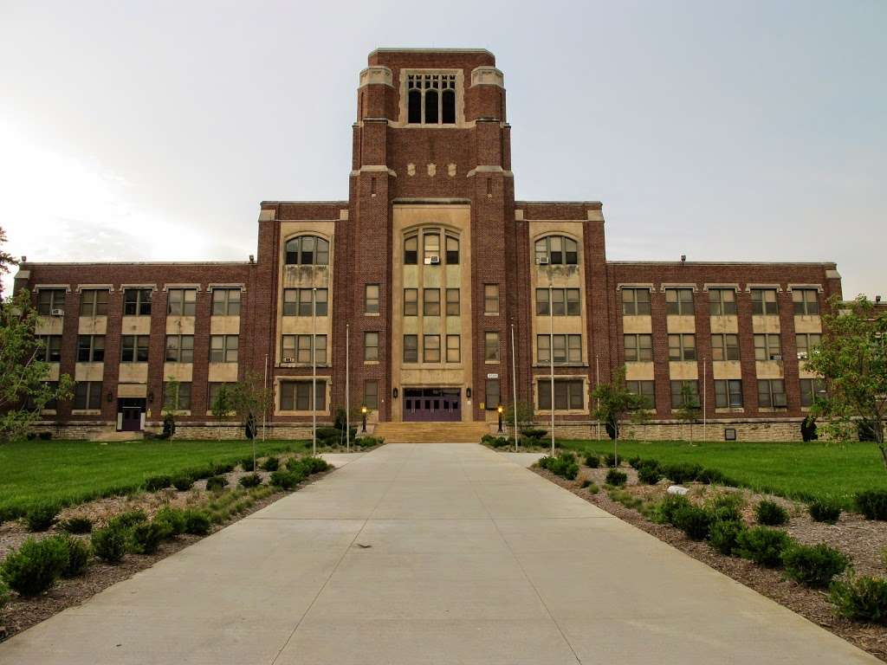
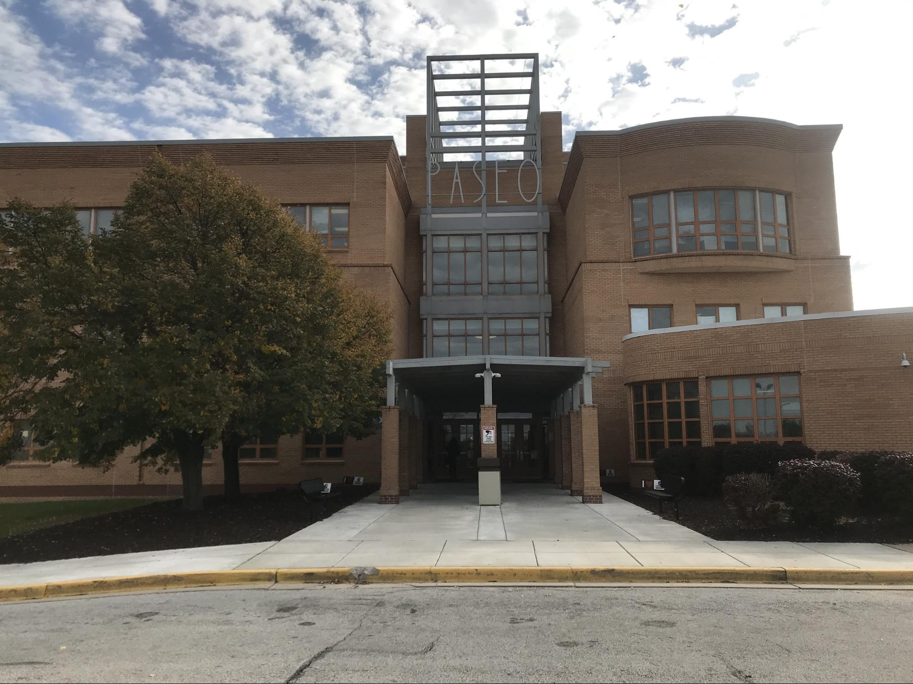

Hello, my name is DeJohn Nelson. I am as of now 21 years old and have been in Kansas City my whole life. Its a city that I have sort of come to love given all of the crime and misfortunes that have happened here. After being in this city so long you come to realize that there isnt really much to do here. Especially this time and age with the coronavirus going around. Everything isnt so bad here though when you have close family and friends to spend time with.

My biological mother had me when she was just 6 months pregnant. I barely weighed a pound when I was born so my first year of life was entirely spent inside a hospital. Its honestly a miracle that I am alive as my grandmother would say. Speaking of my grandmother and the incredibly strong and patient woman that she is, she adopted my two sisters and I and have been raising us ever since along with my sister's dad who I also call dad. It wasnt until I was 2 years old that they were able to adopt us. They both took us in and raised us to be great God fearing adults and I love them both dearly for that.


I have a fairly decent sized family. It consists of all my siblings, including those my dad had by my stepmom. I dont see them as anything less than broter's and sister's even though we dont have the same blood. I have an extremely close bond with my little brother. We didnt get along very much when we were younger but now there isnt anything I wouldnt do for him. I consider myself his keeper.

The Elementary school I went to was different from typical schools. It was centered around African culture where we learned things like the principles of MA'At and a lot of other african centered teachings. It was a very fun way of learning and put a new aspect on things in my life from then on. I met one of my friends that I am stll very close friends with today there. I spent 5th-8th grade at ACECC and I couldnt have gone to a better school.
I hated highschool. I went to Paseo Academy and absolutely hated it besides gaining a close friend that I am also still close friends with till this day. Other than that I absolutely despised highschool. That's honestly all I have to say about that.
I really only have 1 hobby. It's something that I probably wouldnt be completely me without and thats gaming. I LOVE gaming. I have been gaming since I was 6 or 7 years old and had a Nintendo 64 and would play Mario Kart all day and night. It wasnt until I was about 11 that I was introduced to the xbox 360 when my older brother would bring it over for us to play. We would would play Call of Duty till we passed out sleep and that is where my passion for Call Of Duty came from. Once I turned about 14 I bought my own xbox 360 and played games like Call Of Duty of course and Halo. I couldnt stop. I would come home straight from school and try to get immediately on the game without running into my grandma because she would make me do my homework and read first. I later on upgraded to the xbox one X but recently upgraded to the PS4 about a week ago.